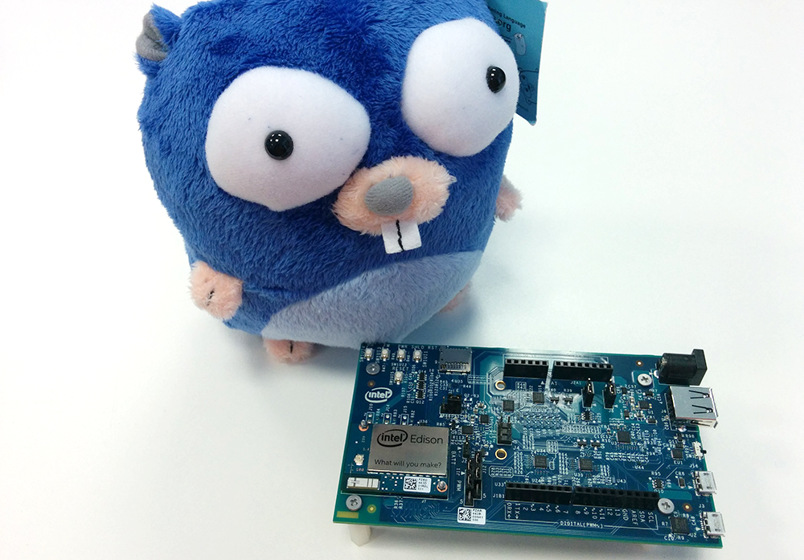

Instalando golang na Intel Edison
Como rodar Go na Intel Edison
 Vamos ver os passos de como instalar Go na Intel Edison.
Intel Edison
A Intel Edison possui um processador Intel® Atom™dual core de 500 MHz e um microcontrolador Intel® Quark™ MCU de 32 bits de 100 MHz. Ele suporta 40 portas GPIOs e inclui LPDDR3 de 1 GB, 4GB EMMC, WiFi e Bluetooth® Low Energy em um módulo do tamanho aproximado de um selo.

Golang
Go é uma linguagem de programação criada pela Google e lançada como open source em novembro de 2009. É uma linguagem compilada de programação concorrente com uma sintax semelhante a C.
Passos para a instalação do Go na Edison
1. Atualize os pacotes do OPKG
Vamos utilizar o vi para inserir os feeds no arquivo base-feeds.conf.
vi /etc/opkg/base-feeds.conf
Ao abrir o arquivo adicione as seguintes linhas:
src all http://iotdk.intel.com/repos/1.1/iotdk/all
src x86 http://iotdk.intel.com/repos/1.1/iotdk/x86
src i586 http://iotdk.intel.com/repos/1.1/iotdk/i586
Depois atualizamos o OPKG
$ opkg update
$ opkg upgrade
2. Instale o GIT e o BASH
$ opkg install git
$ opkg install bash
3. Baixe o repositório do Go e execute a instalação
Clone o repositório do Go
$ git clone https://go.googlesource.com/go
$ cd go
$ git checkout go1.4.1
Faça o build
$ cd src
$ ./all.bash
Vai demorar um pouco, entre 10 e 20 min.
Depois que terminar o build, se tudo tiver dado certo, você vai ver:
ALL TESTS PASSED
---
Installed Go for linux/amd64 in /home/you/go.
Installed commands in /home/you/go/bin.
*** You need to add /home/you/go/bin to your $PATH. ***
Adicione o GOROOT ao PATH
$ export GOROOT=/home/root/go
$ export GOPATH=/usr/root/go
$ export PATH=$PATH:$GOROOT/bin
Pronto agora você pode começar a usar o Go dentro da sua Edison.
Utilizando as GPIO's do Edison
Para utilizar as GPIO's da Edison eu sugiro utilizar o Gobot. Ele possui um módulo para acessar as GPIO's de maneira rápida e fácil.
Crie um arquivo edison.go:
$ touch edison.go
Instale os módulos Go:
$ go get -d -u github.com/hybridgroup/gobot/...
Insira o código:
package main
import (
"time"
"github.com/hybridgroup/gobot"
"github.com/hybridgroup/gobot/platforms/gpio"
"github.com/hybridgroup/gobot/platforms/intel-iot/edison"
)
func main() {
gbot := gobot.NewGobot()
e := edison.NewEdisonAdaptor("edison")
led := gpio.NewLedDriver(e, "led", "13")
work := func() {
gobot.Every(1*time.Second, func() {
led.Toggle()
})
}
robot := gobot.NewRobot("blinkBot",
[]gobot.Connection{e},
[]gobot.Device{led},
work,
)
gbot.AddRobot(robot)
gbot.Start()
}")
Agora rode o código:
$ go run edison.go